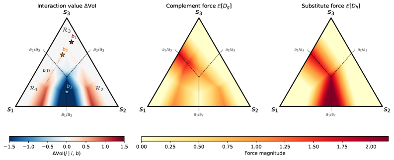

The information-substitution results are formalized in Lean 4.
Abstract
When does consulting one information source raise the value of another, and when does it diminish it? We study this question for Bayesian decision-makers facing finite actions. The interaction decomposes into two opposing forces: a complement force, measuring how one source moves beliefs to where the other becomes more useful, and a substitute force, measuring how much the current decision is resolved. Their balance obeys a localization principle: substitution requires an observation to cross a decision boundary, though crossing alone does not guarantee it. Whenever posteriors remain inside the current decision region, the substitute force vanishes, and sources are guaranteed to complement each other, even when one source cannot, on its own, change the decision. The results hold for arbitrarily correlated sources and are formalized in Lean 4. Substitution is confined to the thin boundaries where decisions change. Everywhere else, information cooperates. Code and proofs: https://github.com/nidhishs/all-substitution-is-local.
Problem
When does consulting one information source raise the value of another, and when does it diminish it? For Bayesian decision-makers facing finite actions, the conditions governing complementarity versus substitutability of information sources were not fully characterized.
Approach
The authors decompose the interaction between information sources into two opposing forces: a complement force (measuring how one source moves beliefs to where the other becomes more useful) and a substitute force (measuring how much the current decision is resolved). They prove a localization principle: substitution requires an observation to cross a decision boundary. Whenever posteriors remain inside the current decision region, sources are guaranteed to complement each other. The results hold for arbitrarily correlated sources and are formalized in Lean 4.

Figure 1: Belief-simplex geometry of the interaction. Left : the sign of \Delta\operatorname{VoI} partitions the simplex into complement and substitute regions. Middle, Right : the two constituent forces; the complement force is diffuse across the interior while the substitute force concentrates sharply along decision boundaries. Their difference determines the sign of \Delta\operatorname{VoI} .
Results
The paper establishes that substitution is confined to the thin boundaries where decisions change, while everywhere else information cooperates. The results hold for arbitrary finite-action decision problems and arbitrarily correlated sources.